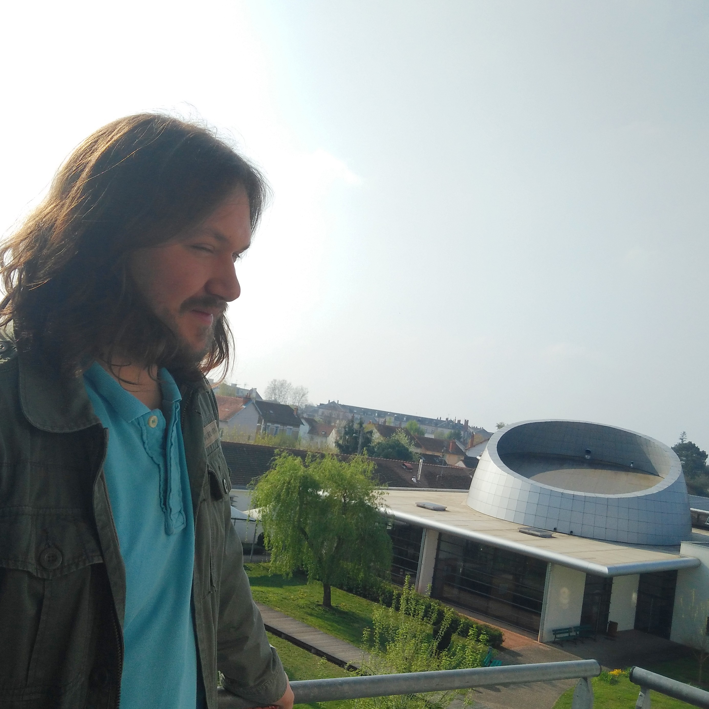

C O M P E T E N C E S
L O I S I R S
Durand Mickaël
7 rue Robert Perrault
03000 Moulins
tel : 06.62.40.11.28
permis B
P R E S E N T A T I O N
Agé de 28 ans, passionné depuis toujours par l'informatique, j'ai récemment décidé de remettre en question mon avenir professionnel pour m'orienter vers le métier de Développeur Web. Ancien Educateur Spécialisé, je suis aiséemment capable de m'intégrer au sein d'une équipe, et compte principalement sur mes capacitées d'analyses et d'observation pour mener à bien les projets confiés. J'ai, de plus, acquis des méthodes d'apprentissages post-formation qui pourront me permettre de développer mes compétences dans le futur.
F O R M A T I O N
| 2016–2017 | Formation de Développeur web, F.A.C.E, Moulins. |
|---|---|
| 2011–2013 | Diplôme d’État de Moniteur Éducateur, Ecole de Travail Éducatif et Social, Marvejols. |
E X P E R I E N C E
| 14-04-2014 / 06-02-2016 | Diverses périodes de remplacement en tant que Moniteur éducateur au seins de l'IME « La Clarté » à Moulins. |
|---|---|
| 20 / 01 / 2014 - 28 / 03 / 2014 | Emploi de veilleur de nuits au sein de l'IME « Clairejoie » à Moulins. | 04 / 11 / 2013 - 23 / 11 / 2013 | Emploi de veilleur de nuits au sein de l'IME « La Clarté » à Moulins. |
| 21 / 10 / 2013 - 26 / 10 / 2013 | Emploi de Moniteur Éducateur au sein de l’IME « La Clarté » à Moulins |
| 07 / 11 / 2013 - 18 / 10 / 2013 | Emploi de veilleur de nuits au sein de l'IME « La Clarté » à Moulins. |
| 2011 - 2013 | Formation au Diplôme d’État de Moniteur Éducateur. |
|